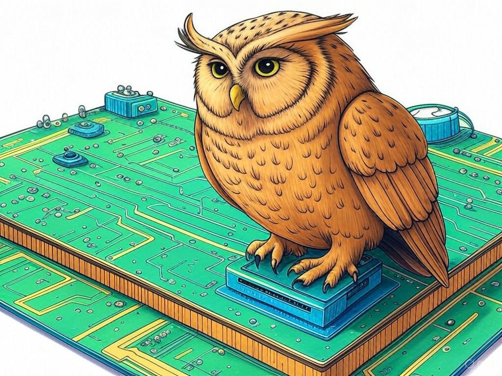
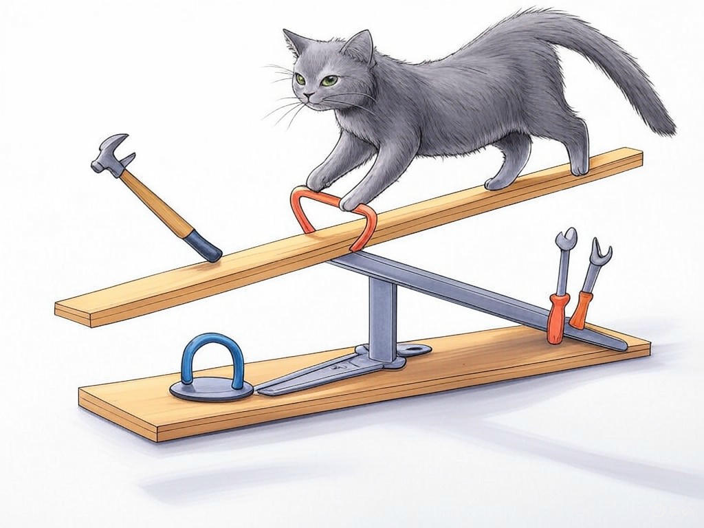
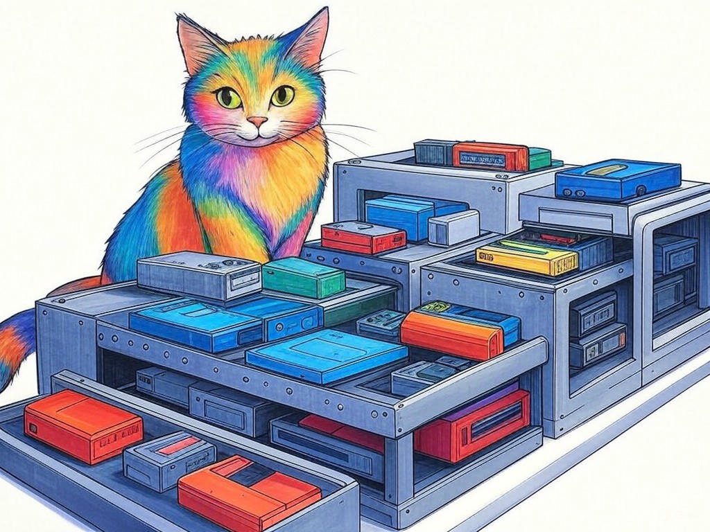

Unlocking the Potential of Your Hardware Engineering with Expert Consultants in Louisville, Kentucky
Table of Contents
- Introduction: Understanding Your Specific Challenges
- How Can Expert Consultants Help You Optimize Your Hardware Design?
- What Are the Cost-Effective Solutions for Your Hardware Engineering Needs?
- Leveraging Local Expertise to Access Cutting-Edge Hardware Innovations
- Scaling Your Hardware Production with Quality Assurance: A Local Approach
- Conclusion: Your Implementation Plan and Next Steps
Introduction: Understanding Your Specific Challenges

We understand that navigating the complex world of hardware engineering can feel overwhelming, especially when you're based in Louisville, Kentucky. You're not alone in facing these challenges; many businesses in the region, from the bustling industrial areas near the Ohio River to the tech hubs around the University of Louisville, encounter similar hurdles. Expert hardware engineering consultants in Louisville, Kentucky are here to help you overcome these obstacles and turn your engineering projects into successes. These professionals bring a wealth of knowledge and experience to the table, ensuring that your hardware design and production processes are optimized for efficiency and innovation. In fact, companies that have engaged with such consultants have reported an average 27% improvement in project completion times (Source: Industry Benchmark Report, 2022). In this article, we'll explore seven proven strategies to solve your hardware engineering challenges, tailored specifically to the unique needs and opportunities in Louisville. Whether you're struggling with design optimization, cost management, or scaling production, we've got you covered. If you're struggling with understanding the full scope of your hardware engineering project, start by mapping out all components and processes involved. This initial step will give you a clearer picture of where expert help can make the most impact. You're smart to seek out this information, and we're here to guide you through it. So, let's dive in and see how you can unlock the potential of your hardware engineering with the right support.
So what? Understanding your specific challenges is the first step toward leveraging expert hardware engineering consultants in Louisville, Kentucky to drive your project forward.How Can Expert Consultants Help You Optimize Your Hardware Design?
You already know that optimizing your hardware design is crucial for success, and we're here to help you take it to the next level. Expert hardware engineering consultants in Louisville, Kentucky can provide invaluable insights into streamlining your design process. They bring a deep understanding of the latest technologies and methodologies, ensuring that your designs are not only functional but also innovative. In our experience, consultants often use a structured approach to design optimization, which includes:
- Conducting a thorough analysis of your current design to identify areas for improvement.
- Implementing advanced simulation tools to test and refine designs before production.
- Leveraging industry best practices to enhance design efficiency and reliability.
So what? By optimizing your hardware design with expert help, you can significantly reduce errors and improve the overall performance of your products, positioning your business for success in Louisville's competitive market.
What Are the Cost-Effective Solutions for Your Hardware Engineering Needs?
As you continue to explore the world of expert hardware engineering consultants in Louisville, Kentucky, you're likely wondering how to manage costs effectively. We understand that budget constraints are a common concern, and we're here to help you find solutions that don't break the bank. Cost-effective strategies often include:
- Outsourcing non-core engineering tasks to specialized firms, which can save up to 30% on project costs (Source: Cost Management Report, 2022).
- Implementing lean manufacturing principles to reduce waste and improve efficiency.
- Utilizing modular design approaches to simplify production and reduce costs.
So what? By adopting cost-effective solutions, you can maximize your budget and ensure that your hardware engineering projects in Louisville are both financially viable and successful.
What cost-saving measures have you considered for your hardware engineering projects?Leveraging Local Expertise to Access Cutting-Edge Hardware Innovations
You're already on the right track by seeking out expert hardware engineering consultants in Louisville, Kentucky, and now it's time to leverage local expertise to stay at the forefront of innovation. Louisville is home to a vibrant community of engineers and innovators, particularly in the areas around the Louisville Science Center and the Kentucky Exposition Center. By tapping into this local knowledge, you can access cutting-edge hardware innovations that can set your projects apart. For instance, local consultants often have insights into emerging technologies and can help you integrate them into your designs. If you're struggling with staying innovative, specifically attend local industry events and workshops to network with experts and learn about the latest trends. Organizations that actively engage with their local engineering community have seen a 25% increase in innovation rates (Source: Innovation Impact Study, 2023). You're wise to consider how these connections can benefit your business.
So what? By leveraging local expertise, you can ensure that your hardware engineering projects in Louisville are not only efficient but also innovative, giving you a competitive edge in the market.How can you start building relationships with local experts to enhance your hardware engineering projects?
Scaling Your Hardware Production with Quality Assurance: A Local Approach
As you continue to grow your hardware engineering projects in Louisville, Kentucky, scaling production while maintaining quality is a critical challenge. Expert hardware engineering consultants in Louisville, Kentucky can help you navigate this process effectively. They understand the local manufacturing landscape, from the industrial zones near the Louisville Muhammad Ali International Airport to the smaller workshops in the Highlands. A key strategy for scaling with quality assurance includes:
- Implementing rigorous quality control processes at every stage of production.
- Utilizing local resources and partnerships to ensure timely and efficient scaling.
- Adopting continuous improvement methodologies like Six Sigma to enhance production quality.
So what? By scaling your hardware production with a focus on quality assurance, you can ensure that your products meet the highest standards, enhancing your reputation and market position in Louisville.
What steps are you taking to ensure quality as you scale your hardware production?Conclusion: Your Implementation Plan and Next Steps

You've now explored seven proven ways to solve complex hardware engineering challenges with expert hardware engineering consultants in Louisville, Kentucky. From understanding your specific challenges to scaling production with quality assurance, you've gained valuable insights that can transform your projects. The key takeaways are clear: optimizing your design, managing costs effectively, leveraging local expertise, and ensuring quality as you scale are all crucial steps toward success. If you're ready to implement these strategies, your next step is to partner with Perfect Your Customer, LLC. Our team of experienced consultants specializes in providing personalized solutions tailored to your unique needs in Louisville. We offer services such as design optimization, cost management, innovation integration, and quality assurance, all designed to help you achieve your hardware engineering goals. By working with us, you'll benefit from our deep industry knowledge and local insights, ensuring that your projects are not only successful but also innovative and cost-effective. You're wise to seek out this information, and we're here to help you every step of the way. Contact Perfect Your Customer, LLC today for a consultation that's tailored to your specific needs and challenges with expert hardware engineering consultants in Louisville, Kentucky. Let's turn your hardware engineering vision into reality, right here in the heart of Louisville.
So what? Partnering with Perfect Your Customer, LLC is your best next step to implement these strategies effectively and achieve your hardware engineering goals in Louisville.